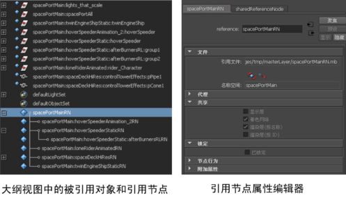
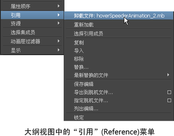

您可以从“引用选项”(Reference Options)窗口创建新文件引用。创建一个涉及设置引用选项的引用，然后浏览到要引用到父场景的文件的位置。您可以通过执行以下操作访问“引用选项”(Reference Options)窗口：
- 在“大纲视图”(Outliner)中的空白区域中单击鼠标右键，然后选择“引用 > 创建引用”(Reference > Create Reference) >
 。
。
- 选择“文件 > 创建引用”(File > Create Reference) > 。
创建文件引用以后，将在场景中加载该引用并且其引用节点将显示在“大纲视图”(Outliner)中，由  图标指示。属于被引用文件的对象由
图标指示。属于被引用文件的对象由  图标指示，分组的对象由 图标指示。若要查看引用节点和对象层次或每个引用节点的成员，请在大纲视图
“显示”(Display)菜单中，启用“引用节点”(Reference Nodes)和“引用成员”(Reference Members)
图标指示，分组的对象由 图标指示。若要查看引用节点和对象层次或每个引用节点的成员，请在大纲视图
“显示”(Display)菜单中，启用“引用节点”(Reference Nodes)和“引用成员”(Reference Members)
“属性编辑器”(Attribute Editor)将显示关于引用节点的信息，如引用文件路径、其名称空间和共享详细信息。通过单击位于“文件”(File)区域中的图标卸载和重新加载引用。
注： 如果某个对象被多次引用，则源对象的唯一标识符 (UUID) 将由每个引用对象继承。这会导致多个对象具有相同的 UUID。

有多个选项可用于管理和修改文件引用及其内容。这些选项位于“大纲视图”(Outliner)或“引用编辑器”(Reference Editor)中的“引用”(Reference)菜单中。这些选项包括：
- 导出选定对象作为引用
- 加载、卸载和重新加载引用
- 预览未加载的内容
- 查看选定的引用
- 复制、替换和删除引用
- 保存、导入、导出和查看对引用所做的编辑
- 锁定和解除锁定引用

有关“引用”(Reference)菜单选项的信息，请参见“大纲视图”(Outliner)上下文菜单。